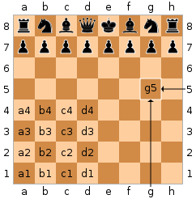

<!DOCTYPE html>
<html>
<head>
    <!-- Global site tag (gtag.js) - Google Analytics -->
    <script async src="https://www.googletagmanager.com/gtag/js?id=UA-127851593-1"></script>
    <script>
      window.dataLayer = window.dataLayer || [];
      function gtag(){dataLayer.push(arguments);}
      gtag('js', new Date());

      gtag('config', 'UA-127851593-1');
    </script>

    <meta charset="utf-8">
    <meta name="viewport" content="width=device-width">
    <meta name="author" content="Joel Laity">
    <title>Joel Laity</title>
    <link rel="stylesheet" href="../css/style.css">
    <link rel="stylesheet" href="style.css">
    <link href="https://fonts.googleapis.com/css?family=IBM+Plex+Sans:400,400i" rel="stylesheet">
    <script src="https://cdn.jsdelivr.net/gh/google/code-prettify@master/loader/run_prettify.js"></script>
</head>
<body>
    <header>
        <div class="banner">
            <div id="branding">
                <h1>Joel Laity</h1>
            </div>
            <nav>
                <ul>
                    <li><a href="../index.html">Home</a></li>
                    <li><a href="../academic.html">Academic</a></li>
                    <li class="current"><a href="../blog.html">Blog</a></li>
                    <li><a href="https://github.com/joelypoley">GitHub</a></li>
                    <!-- <li><a href="resume.html">Resume</a></li> -->
                </ul>
            </nav>
        </div>
    </header>

    <section id="showcase">
            
    </section>

    <!-- <section>
        <div class="container">
            <h1>Subscribe to my newsletter</h1> 
            <form>
                <input type="email" placeholder="you@example.com">
                <button type="submit" class="button_1">Subscribe</button>
            </form>
        </div>
    </section> -->

    <div class="container">

<!--     	Begin post -->
<h1 id="checkmate-undefined-behavior">Checkmate, undefined behavior</h1>
<p>Undefined behavior is the bane of C and C++ programmers. The compiler can choose to do whatever it wants if a program has undefined behavior. This is normally not a good thing, but I recently wrote some code with some undefined behavior and amazingly the compiler chose to do exactly what I had intended, not what I told it to do.</p>
<p>I have spent the last week working on a <a href="https://github.com/joelypoley/pawn_grabber">chess engine</a> in C++. Most chess engines take advantage of the convenient coincidence that the number of squares on a chess board, 64, is the same as the word size on modern processors. So, you can do things like store the location of all the white pawns with a single 64 bit integer: you just set the i-th bit to 1 if there is a white pawn on the i-th square. This technique allows you to do neat tricks, such as move all pieces up one square by left shifting the integer by 8.</p>
<p>I wrote a simple utility function that takes the name of the square as a string and returns the corresponding 64 bit integer. Chess players use a simple naming convention for the squares on a chessboard: the rows are labeled 1-8 and the columns are labelled a-h, so the square in the bottom left hand corner is the a1 square. </p>
<p></p>
<p>Here is (roughly) how I implemented my string to 64 bit integer function. Can you see what&#39;s wrong with it?</p>

<pre class="prettyprint">
// At the top of the file.
constexpr int board_size = 8;

// algebraic_square would be one of a1, a2, ..., h7, h8.
uint64_t str_to_square(std::string_view algebraic_square) {
  const char column = algebraic_square[0];
  const char row = algebraic_square[1];
  const int column_index = column - 'a';
  const int row_index = row - 1;
  return uint64_t(1) << ((row_index + 1) * board_size - column_index - 1);
}
</pre>


<p>I forgot to put quotes around the <code>1</code> in the line <code>const int row_index = row - 1;</code>! Instead of subtracting the character <code>&#39;1&#39;</code> I subtracted the integer <code>1</code>. Since the ascii encoding of the character <code>&#39;1&#39;</code> is 49, the <code>row_index</code> is always off by 48.</p>
<p>This bug disturbed me, not because bugs like this are so unusual, but because none of my tests caught this and I only discovered the bug when I was tidying up some of the surrounding code. I was left shifting a 64 bit integer by at least 384 every time I called this function and yet it seemingly caused none of my tests to fail. After some investigation I concluded that for <em>every</em> single square on the chess board my code gave the right answer. This was unexpected to say the least.</p>
<p>I was already aware that left shifting off the end of a <em>signed</em> integer is undefined behavior but I thought that left shifting off the end of unsigned integers was perfectly well defined, the most significant bits just get discarded. From <a href="https://en.cppreference.com/w/">cpprefence.com</a>:</p>
<blockquote>
<blockquote>
<p>For unsigned a, the value of a &lt;&lt; b is the value of a * 2<sup>b</sup>, reduced modulo 2<sup>N</sup> where N is the number of bits in the return type (that is, bitwise left shift is performed and the bits that get shifted out of the destination type are discarded).</p>
</blockquote>
</blockquote>
<p>According to cppreference, my function should simply push the single set bit <code>unit64_t(1)</code> off the end and return 0 every time. Since <code>str_to_square</code> clearly wasn&#39;t doing this, my next step was to run my program with the <a href="https://clang.llvm.org/docs/UndefinedBehaviorSanitizer.html">UndefinedBehaviorSanitizer</a>. I got the following warning.</p>
<pre><code>runtime <span class="hljs-literal">error</span>: shift exponent <span class="hljs-number">384</span> <span class="hljs-keyword">is</span> too large <span class="hljs-keyword">for</span> <span class="hljs-number">64</span>-<span class="hljs-built_in">bit</span> <span class="hljs-keyword">type</span> <span class="hljs-symbol">'uint64_t</span>' (aka <span class="hljs-symbol">'unsigned</span> long')
</code></pre><p>Which confirmed that I was indeed invoking undefined behavior.</p>
<p>After consulting the <a href="http://www.open-std.org/Jtc1/sc22/wg21/docs/papers/2014/n4296.pdf">C++ standard</a> (something I had been trying to avoid doing) I still did not understand. It says:</p>
<blockquote>
<blockquote>
<p>5.8.2. The value of E1 &lt;&lt; E2 is E1 left-shifted E2 bit positions; vacated bits are zero-filled. If E1 has an unsigned type, the value of the result is E1 × 2<sup>E2</sup>, reduced modulo one more than the maximum value representable in the result type. Otherwise, if E1 has a signed type and non-negative value, and E1 × 2<sup>E2</sup> is representable in the corresponding unsigned type of the result type, then that value, converted to the result type, is the resulting value; otherwise, the behavior is undefined.</p>
</blockquote>
</blockquote>
<p>This paragraph only mentions undefined behavior for signed integers, but I was using unsigned integers so it shouldn&#39;t affect me.</p>
<p>I was just about to give up. It was getting late, and although it was a remarkable coincidence that forgetting the quote marks didn&#39;t affect the behavior of my program, I had already fixed the bug. Then I noticed the paragram above.</p>
<blockquote>
<blockquote>
<p>5.8.1. The shift operators &lt;&lt; and &gt;&gt; group left-to-right. ... The behavior is undefined if the right operand is negative, or greater than or equal to the length in bits of the promoted left operand.</p>
</blockquote>
</blockquote>
<p>I finally had my answer! It is undefined behavior to shift a 64 bit integer by 64 or greater.</p>
<p>All bets are off once your program has undefined behavior, but it was remarkable that my program was seemingly doing what I intended it to do, rather than what I had actually told it to do. I thought that left shifting by more than the &quot;length in bits of the promoted left operand&quot; would result in zero, but instead I was getting the correct answer each time.</p>
<p>To see what was going on I copy and pasted my function into <a href="https://godbolt.org/z/z1Vobs">compiler explorer</a>, turned optimizations up to <code>-O3</code> so the output was less noisy, and got:</p>


<pre class="prettyprint lang-c">
str_to_square(std::basic_string_view<char, std::char_traits<char> >): # @str_to_square(std::basic_string_view<char, std::char_traits<char> >)
    movzx   eax, byte ptr [rsi]
    movzx   ecx, byte ptr [rsi + 1]
    mov     edx, 96
    sub     edx, eax
    lea     ecx, [rdx + 8*rcx]
    mov     eax, 1
    shl     rax, cl
    ret
</pre>

<p>The left shift is being done by the <code>shl</code> instruction. Helpfully, if you right click on an assembly instruction in compiler explorer it points you to the documentation for that instruction, which said:</p>
<blockquote>
<blockquote>
<p>The destination operand can be a register or a memory location. The count operand can be an immediate value or the CL register. The count is masked to 5 bits (or 6 bits if in 64-bit mode and REX.W is used).</p>
</blockquote>
</blockquote>
<p>I finally had my answer! Masking by 6 bits is the same as reducing modulo 64 and by coincidence, <code>((row - 1) + 1) * board_size</code> is the same as the correct value <code>(row - &#39;1&#39; + 1) * board_size</code> modulo 64 (because <code>((&#39;1&#39; - 1) * board_size) % 64 == 0</code>).</p>

<p> The undefined behavior gods must have been smiling down on me.</p>

<!-- End post -->


    <div class="container">
        <footer>
        Last updated February, 2019.
    </footer>
    </div>
    
</body>
</html>